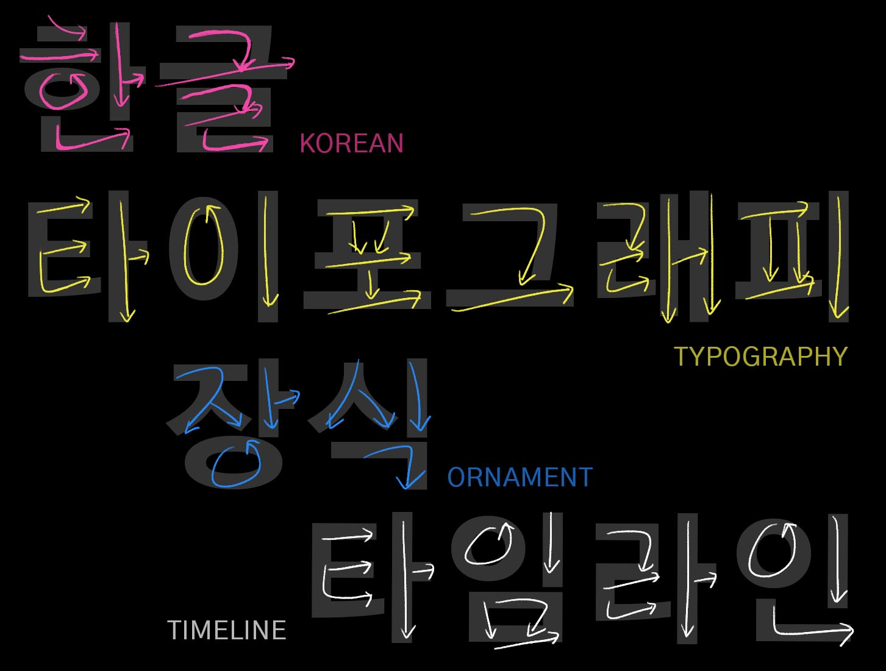
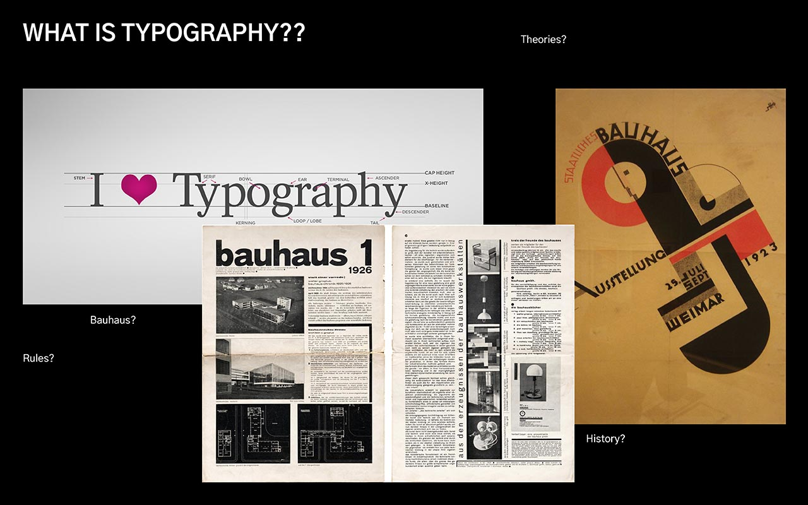
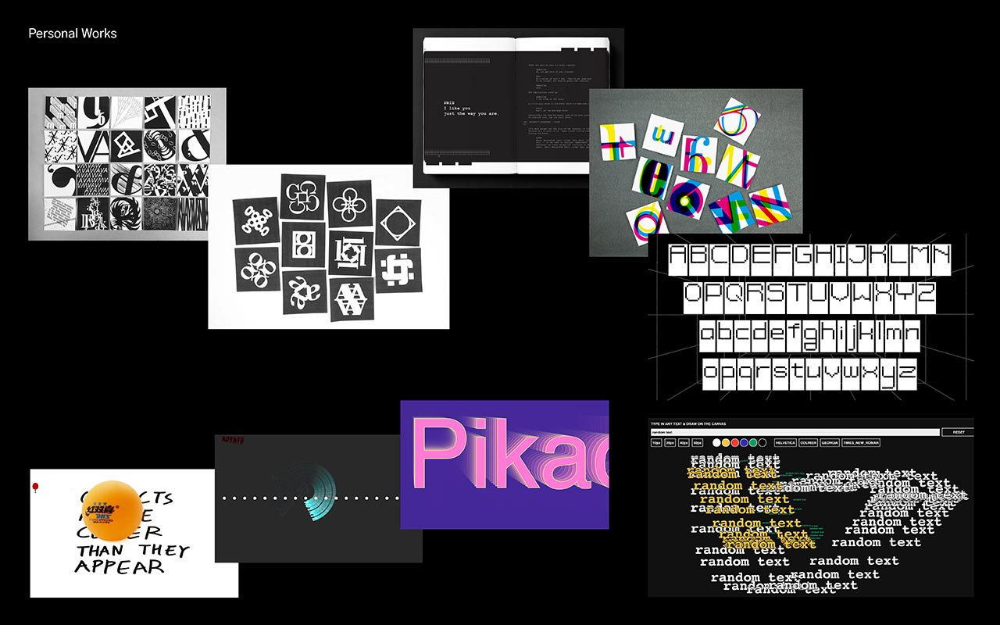
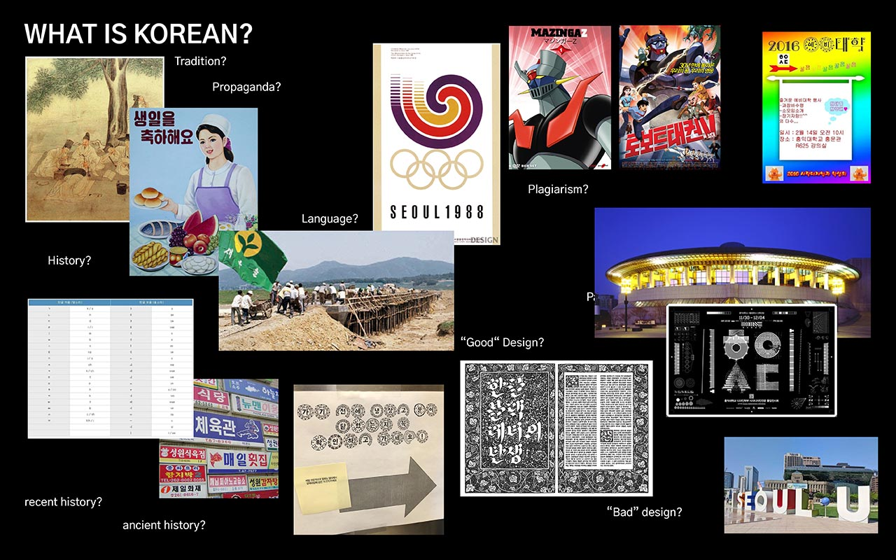
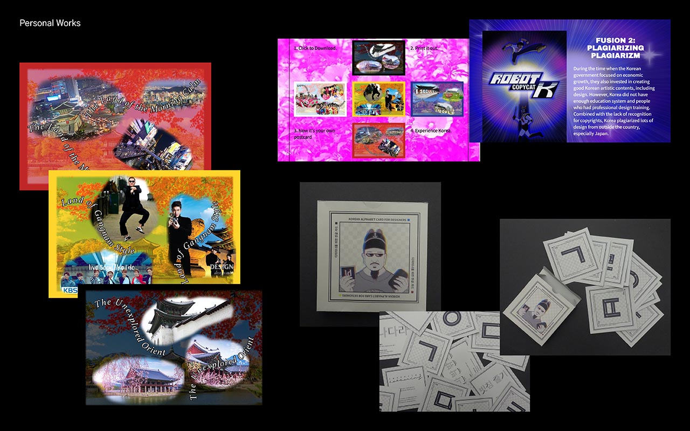
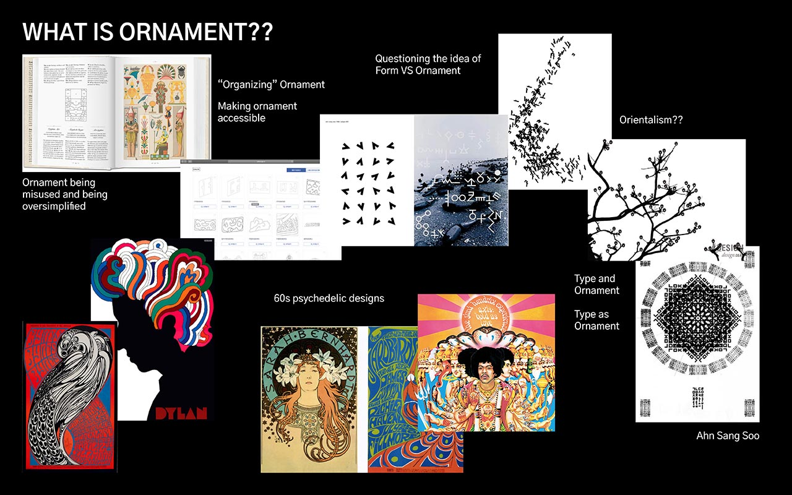
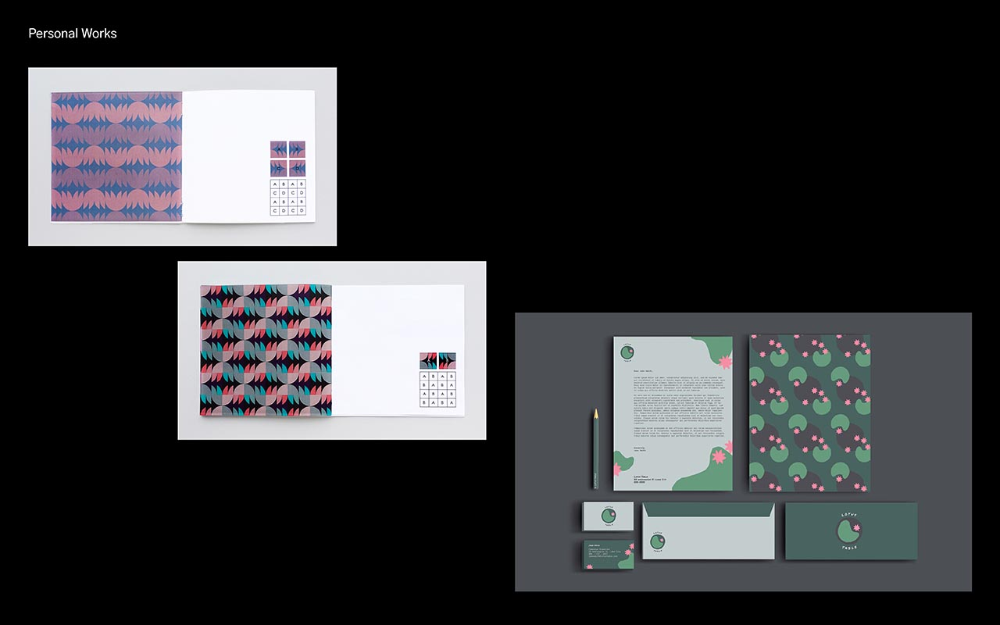
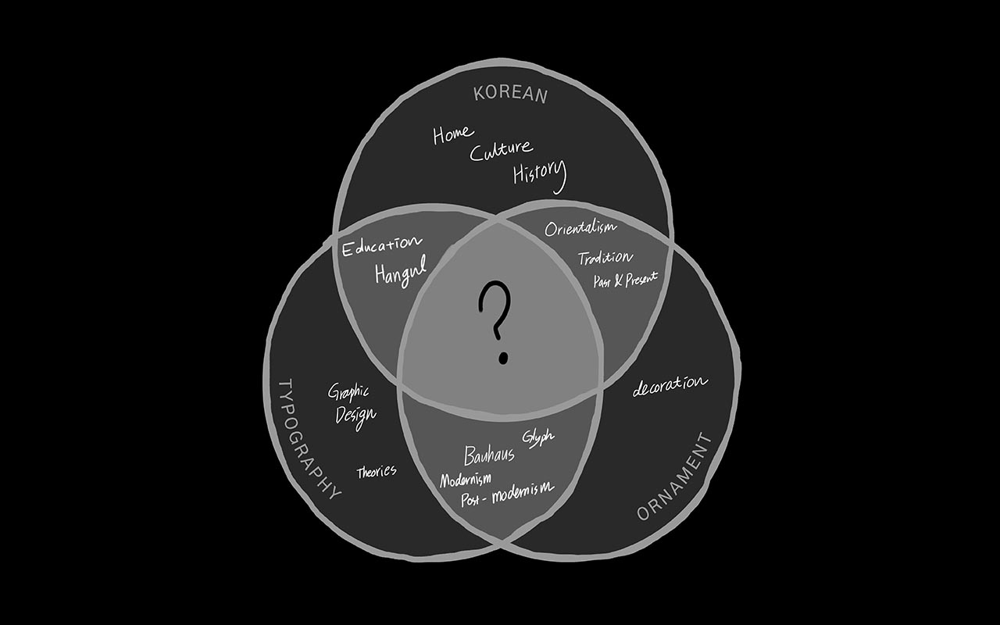

Abstract
The themes that I chose for degree projects are reflection on my previous experience and education. Before I transferred to RISD, I was an Industrial Design major from Korea University from Korea. While I was studying here, I found out things that I have taken for granted was not necessarily the case.
s
My previous education from Korea University was actually Euro-centric and people didn't have much discussions or questions about it.
I studied art and design history in both schools and they were the most different things that I have learned.
First, history classes I had in here were more detailed and second, thought-provoking in terms of previous Euro-centric ideas. It lead me to think more about the Orientalism of Korea, especially about internalized Orientalism.
After I started studying abroad, ironically I started to think more about my culture and started making works about them in the way I have not thought of. It was quite an intense change of environment because first, I had to start using English for most of the day. Second, changing major was also different experience and I did not expect learning typography this much. After learning about typography, I realized that I have not studied Korean typography in both schools, despite the fact it's my first language.
It was also the time when I started thinking outside Bauhaus rules of form and ornament. The ornament was something that I was trained to avoid, and I still have a hard time making one with them until this day. After I learned the relationship between Orientalism and the misuse of ornaments, it provoked me to think about Korean ornaments regarding internalized Orientalism as well.

Typography
- School Education
- Bauhaus
- Graphic Design
- Theories


Korean
- Korean Education
- Culture and language.
- History
- Alphabet


Ornament
- Orientalism
- Form and Ornament
- Content and Ornament
- Modernism and Post-modernism


What will I be talking about?
- Topic - Korean, Typography and Ornament
- History
- Cultural influence
- Orientalism
- Timeline
What do I achieve?
- People questioning their previous design education
- Helping non-Korean speakers understand.
- Making Korean speakers question their language.
- Seeing these topics from new perspective